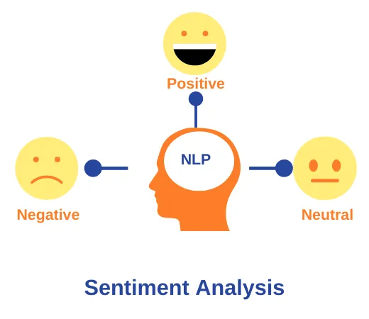
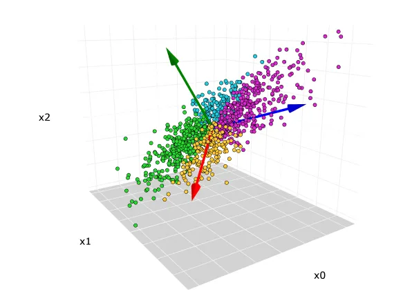
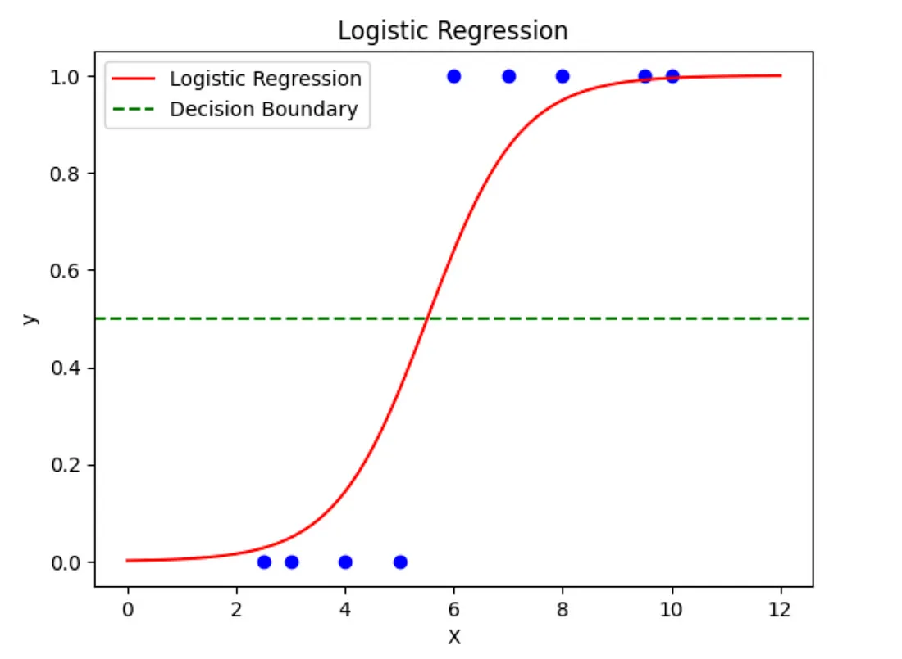

Neural Network Prediction of NYSERDA PV Incentive Funds
This project built a neural network model that predicts whether a PV project can be expected to receive "high" or "low" funding from the NYSERDA program's incentive dollars. It was completed as the Capstone project for the WGU MSDA program.
#Python #NeuralNetwork #MachineLearning #Prediction
View Project

COVID19 SQL Data Exploration Project
SQL project to set up and utilize a database with COVID19 data through PGAdmin. The database was created, and various queries were run to answer questions that help gain familiarity and understanding of the data. The project was inspired by Alex the Analyst.
#SQL #PGAdmin #Exploration
View Project

Time Series Forecast Analysis of Hospital System Revenue
This is a time series analysis using revenue data from a hospital system. The goal was to forecast future revenue values with a projected confidence interval. This project was completed for the WGU MSDA program.
#Python #TimeSeries #Forecasting
View Project

Sentiment Analysis on Reviews Using Natural Language Processing Neural Network
This project is a sentiment analysis using review data from multiple sources with classification. The goal was to create a neural network that could predict based on the text in future reviews. It was completed as a coursework project for the WGU MSDA program.
#Python #NLP #NeuralNetwork #Prediction
View Project

Principal Component Analysis on Patient Data for Dimension Reduction
This project is a Principal Component Analysis on a sample of features representing patient data. The goal was dimensional reduction to create a simplified data set that maintained an explanation of variance for efficient future analysis. The project was coursework completed for the WGU MSDA program.
#Python #PCA #DimensionReduction
View Project

Tableau Dashboard on Hospital System Data
This is a Tableau dashboard created to visualize different aspects of a hospital system’s data. Further data was brought in for comparison with insights and recommendations also provided. Data for this project was prepared using Python. The dashboard was created as a coursework project for the WGU MSDA program.
#Python #Tableau #Dashboard #Reporting
View Project

Logistic Regression Prediction Analysis on Patient Data
This analysis utilized processing tools to determine the features of a selection from the data set that best predicted an outcome variable. These features were then used to create a logistic regression model to predict the outcome variable. The project was completed for the WGU MSDA program.
# Python #Regression
View Project
SQL Exploration Analysis on Survey Database
This project adds a new table of survey responses to a database and utilizes SQL commands to answer specific questions. PGAdmin was used and this project was completed as part of the coursework for the WGU MSDA program.
#SQL #PGAdmin #Exploration #Joins
View Project